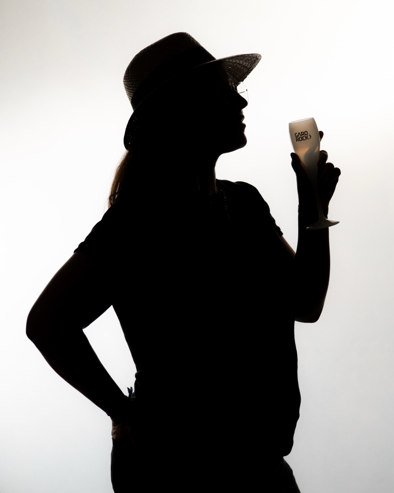
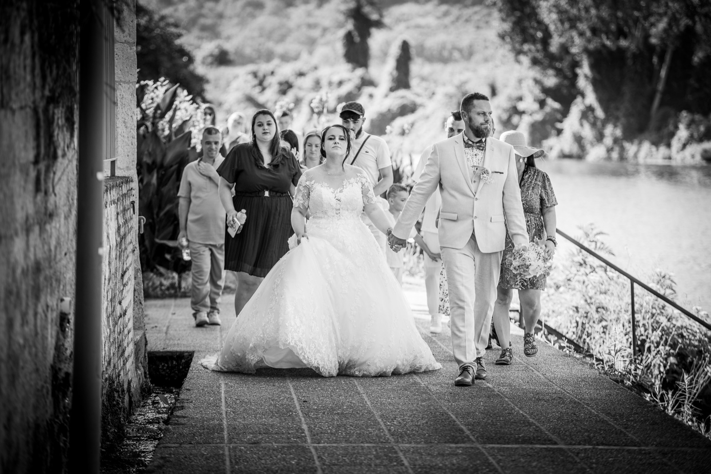
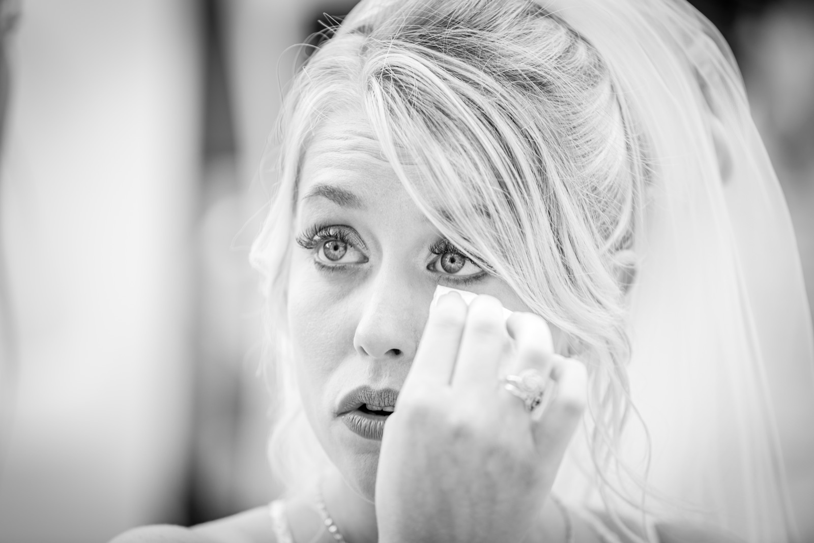
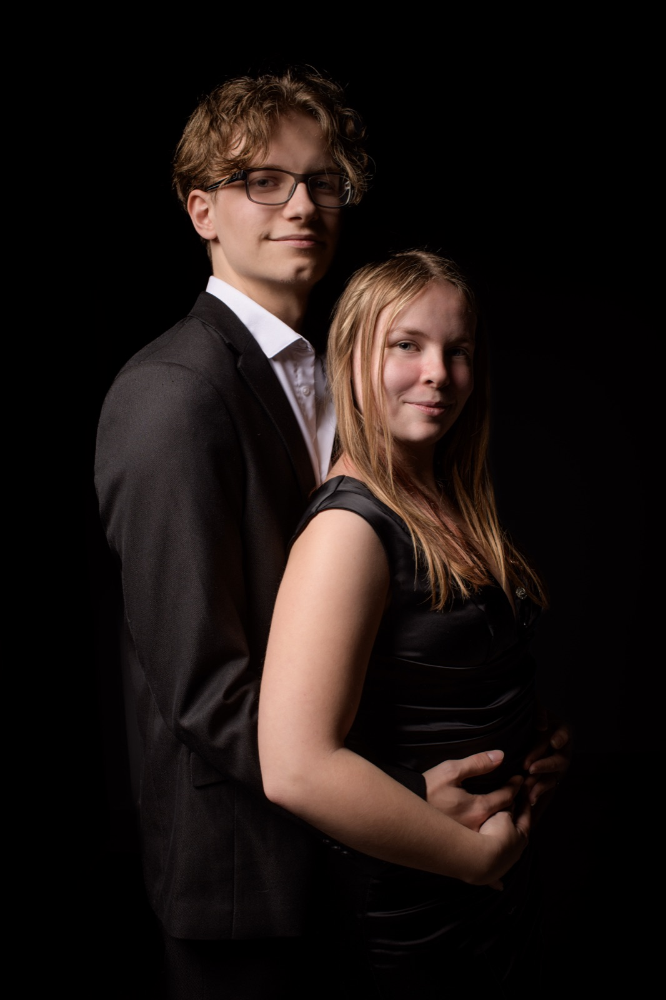
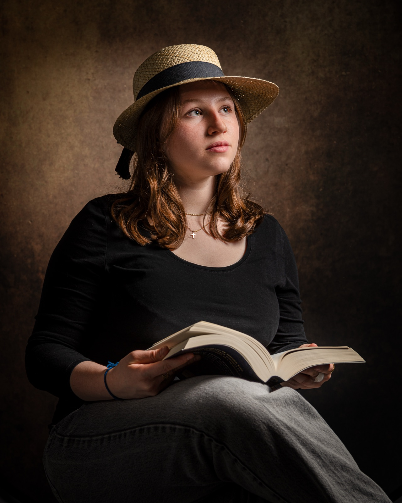

Photographe Marmande
à votre service.

Photographe de mariage et de portrait à Marmande
Dugos Photographie, c'est Laurent Gosselin, photographe professionnel installé à Caumont-sur-Garonne, aux portes de Marmande (Lot-et-Garonne). J'accompagne les couples le jour de leur mariage, je réalise vos séances portrait (couple, famille, grossesse, EVJF) et je photographie aussi les concerts et la scène. J'interviens à Marmande, Tonneins, Aiguillon, Agen, Bordeaux et dans tout le Sud-Ouest.
Une approche naturelle et discrète : capter l'instant présent, sans poses figées, dans votre environnement. Voir les galeries Demander un devis
Bonjour, moi c'est Laurent
Professionnel passionné par l'art de capturer les moments les plus précieux de votre vie.
Capter l'instant présent, naturellement,
dans votre environnement.
Aperçu du portfolio — mariages et portraits





Avis clients
Maurine Bardou
Un immense merci à Laurent Dugos pour avoir immortalisé notre mariage d'une manière aussi exceptionnelle ! Professionnalisme irréprochable, sympathique et à l'écoute. Le résultat est tout simplement magnifique.
Laisser un avis sur Google